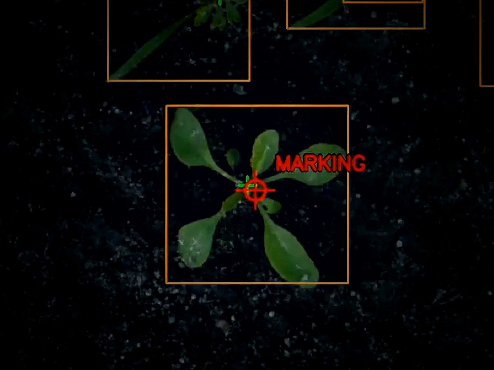
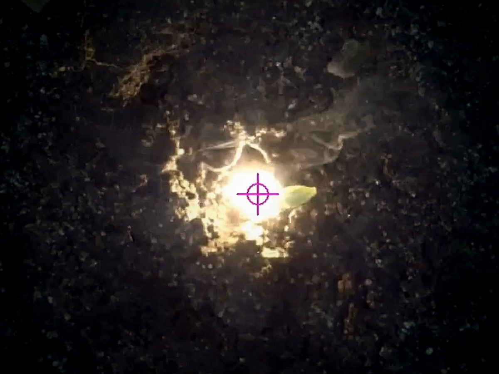
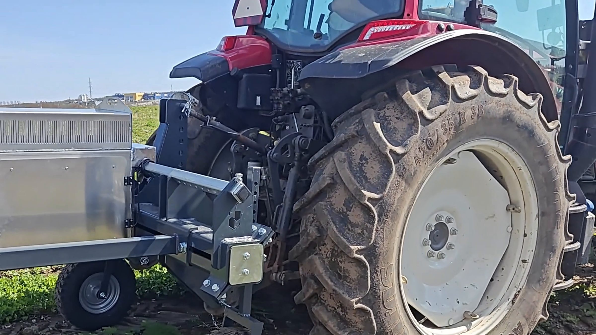

Teknologi
Sådan finder Ecoray en ukrudtsplante på 5 mm ved siden af din afgrøde og fjerner den med laser.
Sådan virker den
Hvert modul finder og fjerner ukrudtet selv, mens traktoren kører 1–3 km/t.
-
Find
Kameraer ser hver plante i rækken under en lystæt afskærmning. Afskærmningen har sit eget lys, så resultatet er det samme i sol, skyer og tusmørke.
-
Sigt
Computeren i modulet skelner afgrøde fra ukrudt og finder hver ukrudtsplantes vækstpunkt, det punkt den vokser ud fra.
-
Fjern
Laseren opvarmer vækstpunktet. Ukrudtet holder op med at vokse og dør i dagene efter.

Kamera og AI
Det svære er at skelne en ukrudtskimplante fra en kimplante af afgrøden. Ecoray gør det på maskinen, mens du kører.
Ser hver plante
Farvekameraer ser hver plante i rækken, mens traktoren kører.
Sit eget lys
Afskærmningen har sit eget lys, så kameraerne ser det samme i sol, skyer og tusmørke.
Kræver ingen forbindelse
Computeren sidder i modulet, så Ecoray virker uden mobildækning i marken.
Trænet på danske marker
Omkring en million markbilleder af afgrøder, tokimbladet ukrudt og græsser.

Laser
Ukrudt vokser ud fra vækstpunktet. Rammer du det præcist, behøver du ikke brænde hele planten.
To lasere pr. modul
Hvert modul har to lasere. Tilsammen dækker de 60 cm arbejdsbredde.
Beskyttet i modulet
Laserne sidder lukket inde i modulet, væk fra støv og vand.
Rammer, mens du kører
Ecoray følger, hvordan jorden bevæger sig under modulet, så hvert skud rammer, hvor ukrudtet er, og ikke hvor det var.
Bygget i et renrum
Optikken bygges og justeres i et renrum på Aarhus Universitet gennem ESA BIC Denmark.
Sikkerhed fra starten
AI'en bestemmer, hvad der skal skydes på. Den bestemmer aldrig, om laseren må skyde.
Lukket afskærmning
Laseren skyder kun inde i en lukket afskærmning. Et gummiskørt følger jorden og holder lyset inde.
Sikkerhed i hardware
Sikkerhedsfunktionerne er bygget i hardware og virker uafhængigt af softwaren.
Standarder
Udviklet efter EN ISO 12100, EN ISO 11553-1 og EN 60825-1 og CE-mærkes efter EU's maskinforordning 2023/1230.

Bygget til marken
Kabinet i IP69K
Lukket aluminiumskabinet, der tåler regn, støv og højtryksrens.
Væskekøling
Et lukket kølekredsløb holder laseren på driftstemperatur gennem en lang dag i marken.
Roligt sigte
Optikken er isoleret fra traktorens vibrationer, så sigtepunktet ligger stille.
Tekniske data
| Ydelse | |
|---|---|
| Ukrudt fundet | 96,5 % i markforsøg |
| Ukrudt dræbt | Mål: 95 % (7–14 dage efter en kørsel) |
| Ukrudtets størrelse | 5–25 mm, kimbladsstadiet, tokimbladet ukrudt og græsser |
| Kapacitet | 0,06–0,18 ha/t pr. modul |
| Kørehastighed | 1–3 km/t, afhængigt af ukrudtstrykket |
| Maskine | |
| Model | Ecoray ONE (GG-LWM-280) |
| Lasere | 2 pr. modul |
| Arbejdsbredde | 60 cm pr. modul, 2 til 10 moduler (1,2 til 6 m) |
| Montering | Trepunktsophæng, støttehjul på hvert modul |
| Strøm | 230 V fra PTO-generator |
| Køling | Væskekølet, lukket kredsløb |
| Kabinet | Aluminium, IP69K (regn, støv, højtryksrens) |
| Sikkerhed og godkendelser | |
| Afskærmning | Lystæt, med et gummiskørt, der følger jorden |
| Sikkerhedsafbrydere | I hardware, uafhængige af softwaren |
| Standarder | EN ISO 12100, EN ISO 11553-1, EN 60825-1 |
| Overensstemmelse | CE, EU's maskinforordning 2023/1230 (under forberedelse) |
Foreløbige data. De kan ændre sig før serieproduktion.
Se den selv
Få et tilbud til sæsonen 2027, eller tal med vores ingeniører om teknikken.